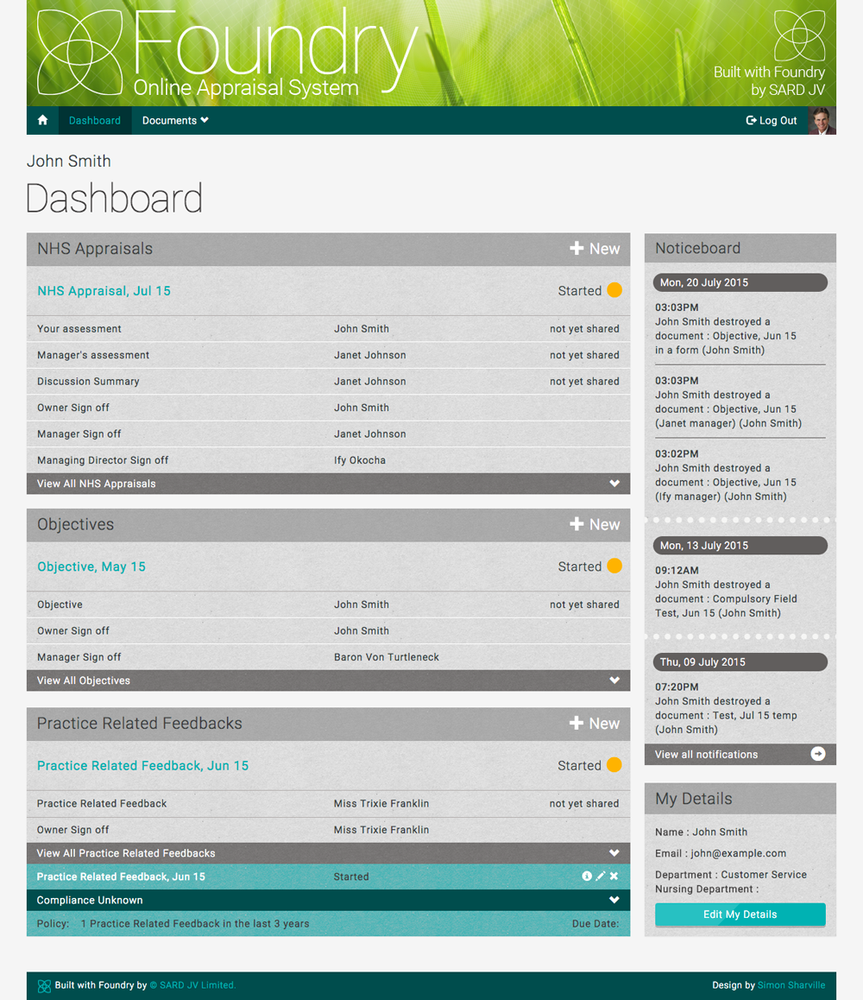
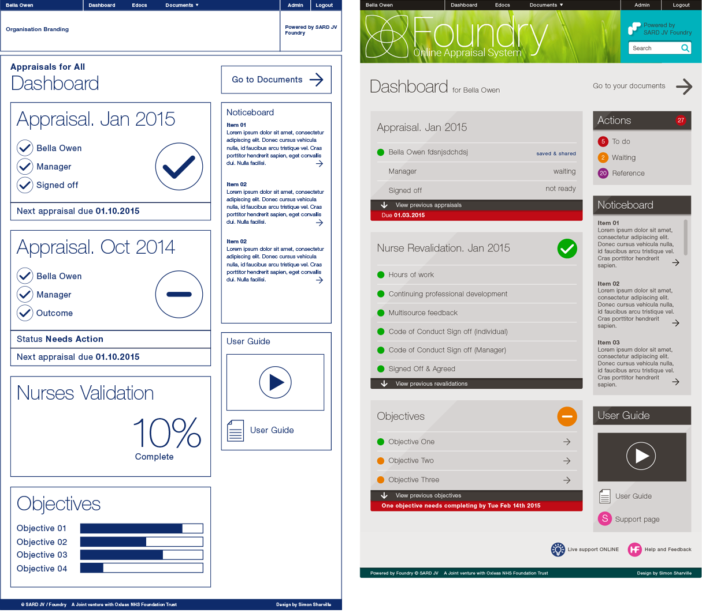
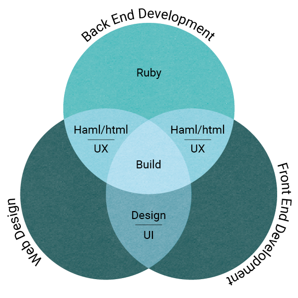
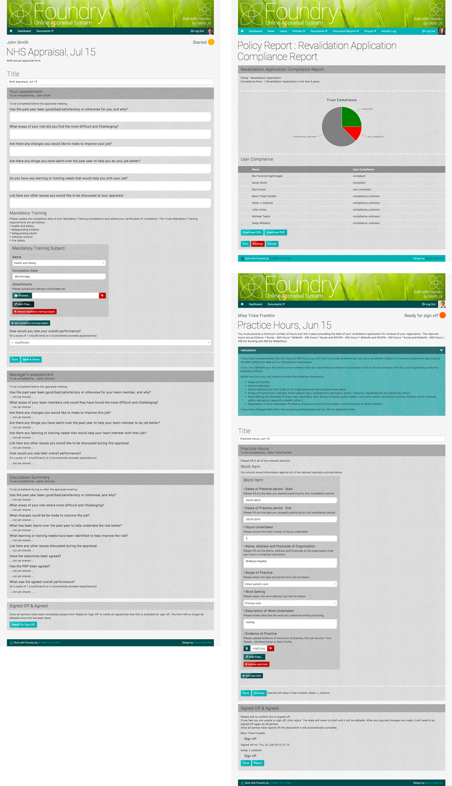
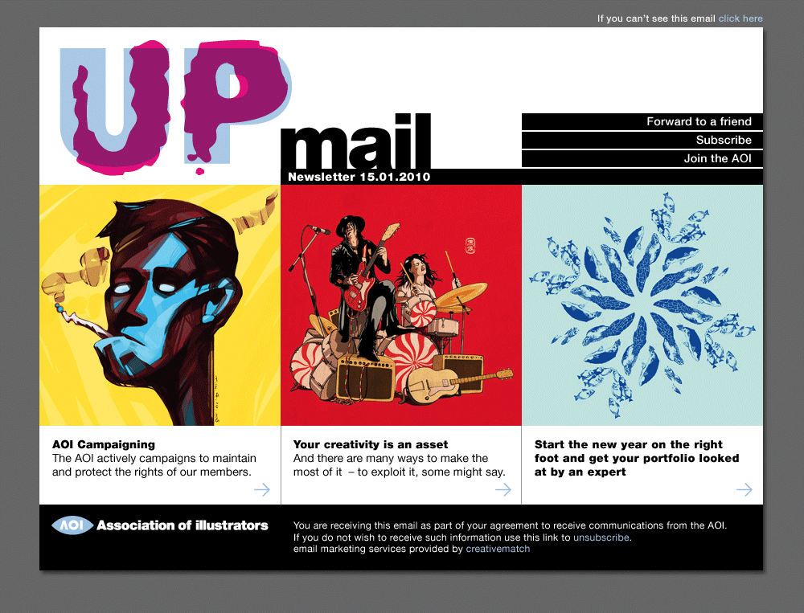
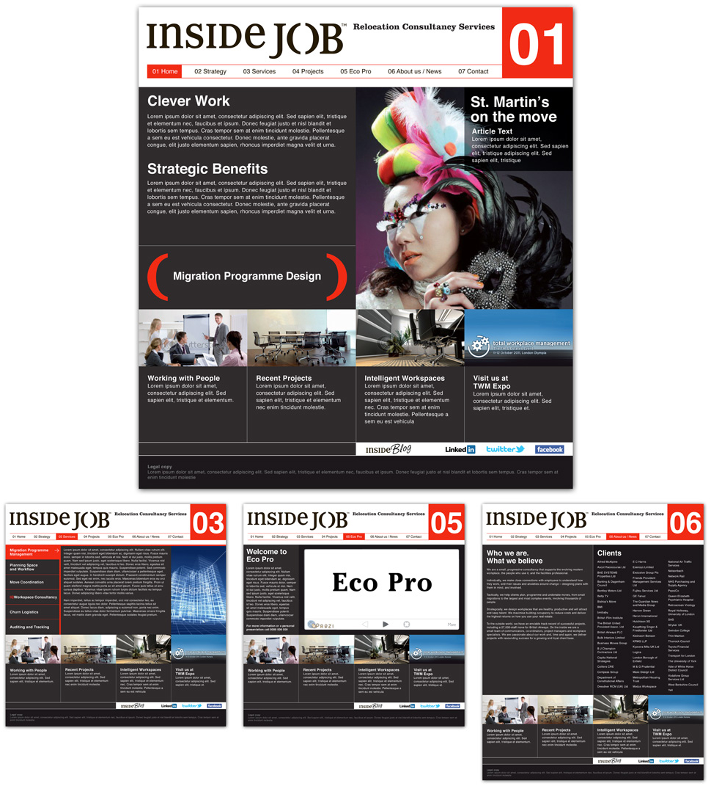
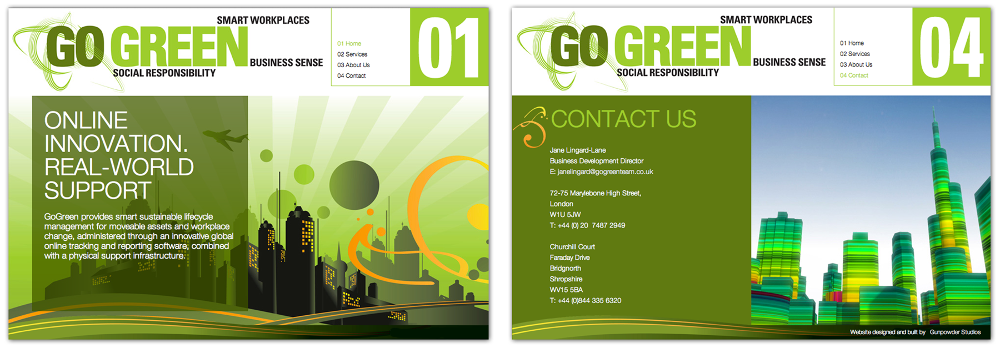
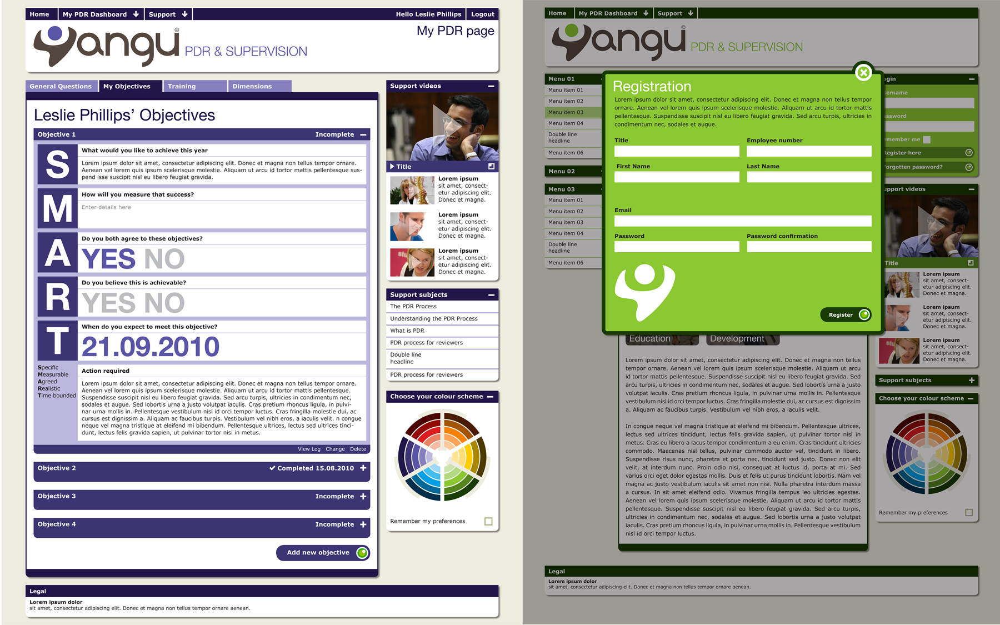

Web design
From web graphics to responsive database online systems
As a web designer I can go from designing a range of icons and graphics to working with a team of developers to create a full blown database driven site. My skills as a designer mean I understand the structure and visual language needed in creating clear and responsive sites that can communicate your business or product to a wider audience.
Design and front-end development
I will often be required to work closely with a client or art director to create a site plan, flat designs and final graphics for the developers to build a site. But using my skills as a front-end developer I can also create small hand-built static sites like this one. As well as a strong background in graphic design and visual communication I also code in html, css, scss and flexbox. Depending on the nature of the project I can design and create a bespoke site or use a framework like Bootstrap or Wordpress.
Foundry
Online appraisal system
Foundry is an online appraisal and revalidation system for the healthcare industry. The system lets healthcare workers create, upload, store and amend documents relevant to their appraisals, when its time for the appraisal the documents are all in one place and can be marked, given feedback and tracked through the various sign-off stages. Finally the entire appraisal portfolio and all supporting evidence can be downloaded in zip archive or PDF format.
The brief
Working closely with SARD, I was asked to design and code the front-end of the Foundry system using flat concepts, then using HTML/Haml and CSS/SCSS I styled the live system as it was being built in Ruby by the developers.
The process
The process started with discussions with the team to analyse the project and get an understanding of how it worked and the journey the client would take through the system. This process of discussion continued right through the project and is still continuing as the system develops further.
Initially I came up with a wireframe and flat designs created in Illustrator to show how the system may look and feel as the user created forms and went through the journey of appraisal. Once the basic design and structure was chosen, we decided, due to the fluid way the forms are created, to work as a team on designing and styling the system live as it was being built.
Back-end development and Front-end design
The back-end of the system is built on the Bootstrap framework and written in Ruby and Haml by the team at SARD. The process of this had already started before I was involved and my job was to get an understanding of how this was built and implement the front-end design using CSS and SCSS and then apply it where needed within the Haml pages.
I have many years experience as a designer and a fair amount of experience using HTML and CSS to create small, static sites (like this one), this however was an enormous task involving linking Ruby, Haml and SCSS together on a system that creates pages fluidly, live on-site. My knowledge of Ruby and Haml are limited however, so we created a system of working that involved 3 overlapping areas to create the final product.
The design of forms is interesting and complex, how they look and will be implemented differs from print to web and they should be created with making the user experience as clear and simple as possible, designing a form system that changes the information as it is being used is doubly interesting and doubly complex. We needed to create something that would have consistency to the look, feel and usability, but be flexible enough to have the ability to have forms within form sections as well as embed documents and graphs, for this we chose the Bootstrap framework to build upon. This is a clear structured framework created by the team at Twitter and is in wide use. It is built on a 12 column grid and comes with a large range of existing components and scripts that can be easily adapted to suit. Other elements we needed to create from scratch and include into the framework. All of this needed to be styled in a clear and easy to use fashion. Having created a colour palette and general feel for the layout and typography in the early designs, we added a paper texture and divide holes between sections to give it a warmer, more human feel. The base colours were kept to a minimum with clear typography and colours for emphasis, specific elements, alerts or status progress. The final designs work well with the principles of creating and adapting ongoing forms. The process is still ongoing as we develop the system further but the end build is up and running and already being implemented.
iPushPull
Website and icon designs
I was commissioned to create a range of icons and illustrations, then review the look of their existing website and show how these could be implemented.


Wildstone Outdoor Media
Brand identity and website
Design for a new visual identity for Outdoor Media Specialists, Wildstone, who develop prime outdoor digital and large format advertising sites, helping landlords and property developers as well as local authorities turn passive spaces into highly desirable media locations.
The brief was to evolve the existing logo and then create a strong visual language that could be used across all their print and digital communications.
The final design uses a tight grid structure, colour palette and use of typography to create a unified identity. The samples below are of the guidelines, stationery, invite and website. The website needed to be a responsive design that could be viewed on various devices and could be updated regularly by Wildstone themselves. Content in Motion and Pragmatic Web were fantastic at following my designs through to final build.


AOI
UP Mail
Original design for UP Mail, subscriber email from the AOI.
Inside Job and Go Green relocation consultants
Website designs
Inside Job were a relocation service that focused on large corporate moves but with a environmental agenda. In partnership with Gunpowder Studios we created a brand identity and website. We got as far as the design process which was all approved when they suddenly merged with another company to become Go Green, basically doing the same under a new name. We were asked to amend the designs and create a new brand, but on a much smaller scale and budget. The end result was a completely different look and feel and a much smaller website. From a design point it became a bit of a compromise and I think the Inside Job was much stronger, but that's what can happen when a client suddenly changes half way through a job. So it goes.
 SARD
SARD Appraisal Database
SARD is an online appraisal database for a division of the NHS. Working closely with the developers, I created a Brand ID, Business Cards and designed the structural look of their system.

SARD Brand Refesh
Having designed the original identity, website and appraisal system for SARD and as the company had grown offering more solutions they returned requesting a refresh. Keeping the original look and feel I made some changes to the logo, created a series of icons and updated the look of the website. This also included a more comprehensive set of guidelines and some brochures.

Yangu Appraisal Database
Yangu is one of the healthcare online appraisal systems created by SARD. I created the identity and design of the system as well as the look of the email newsletter.
